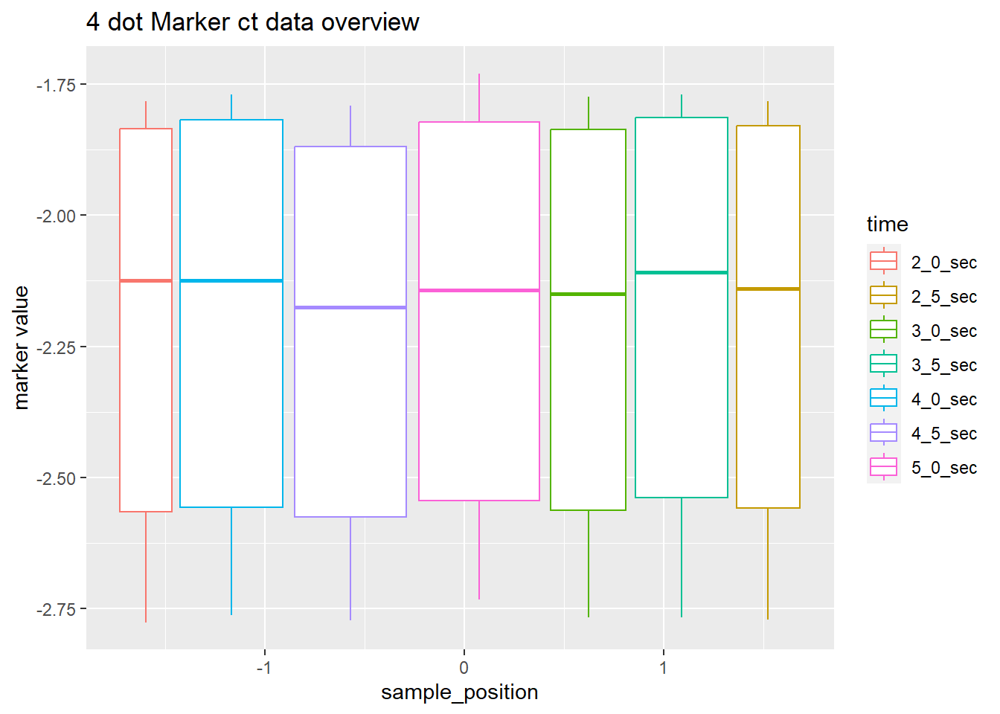
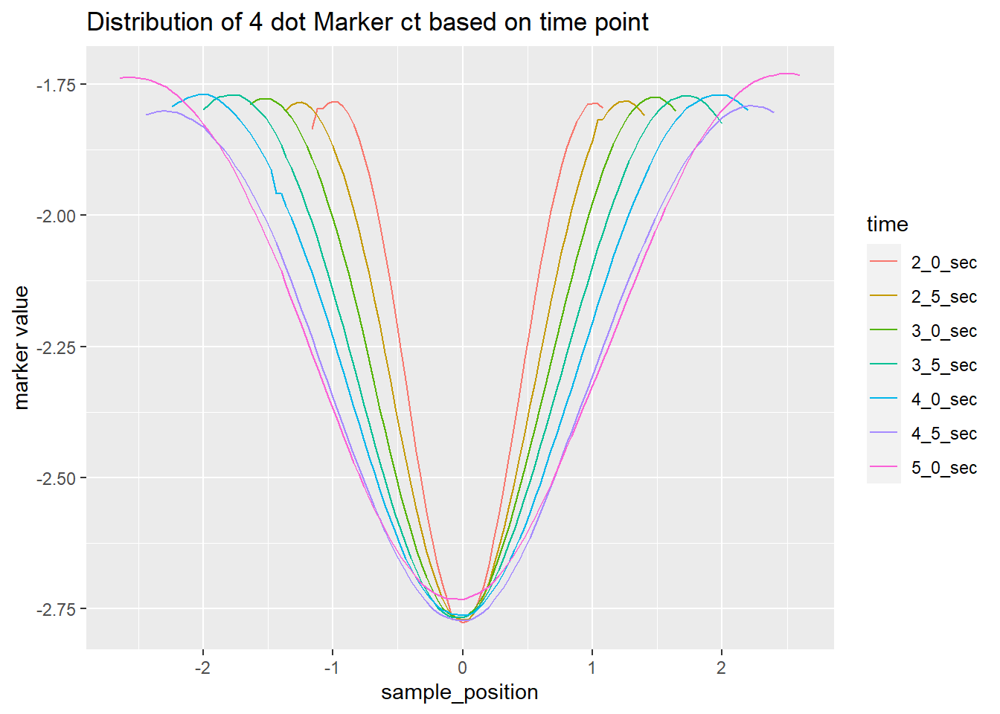
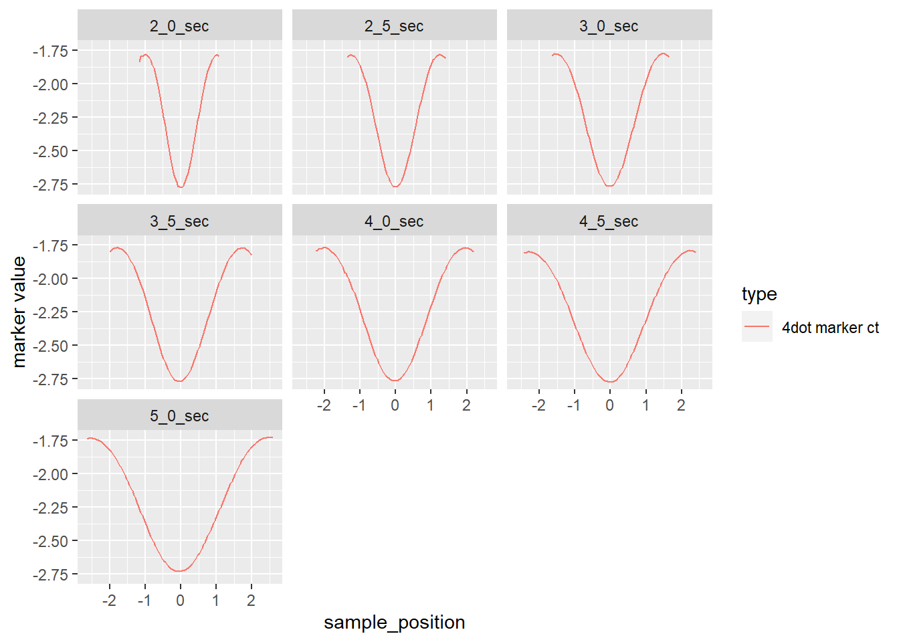
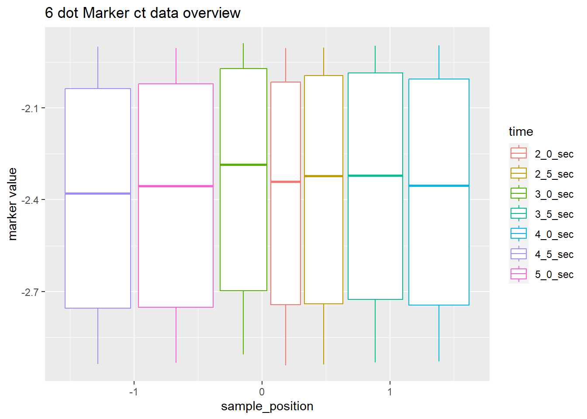
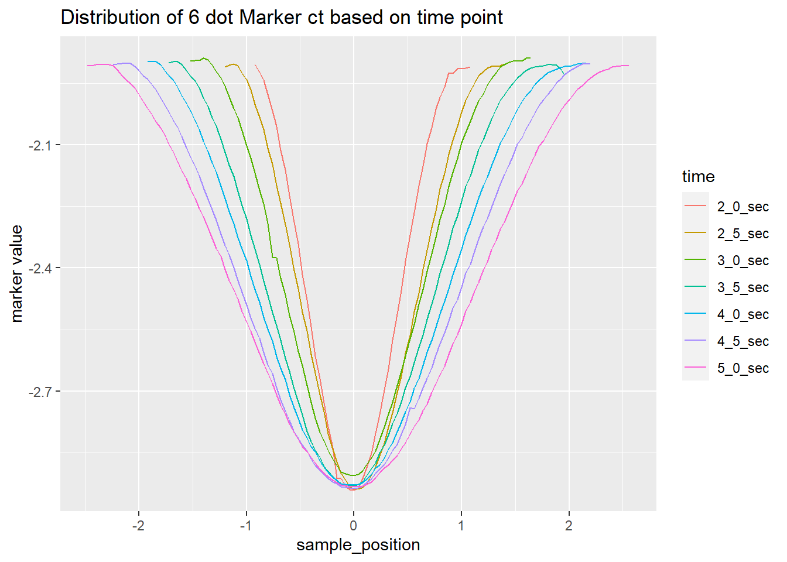
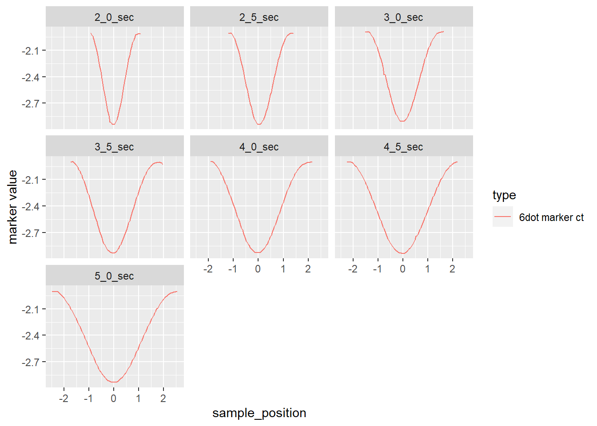
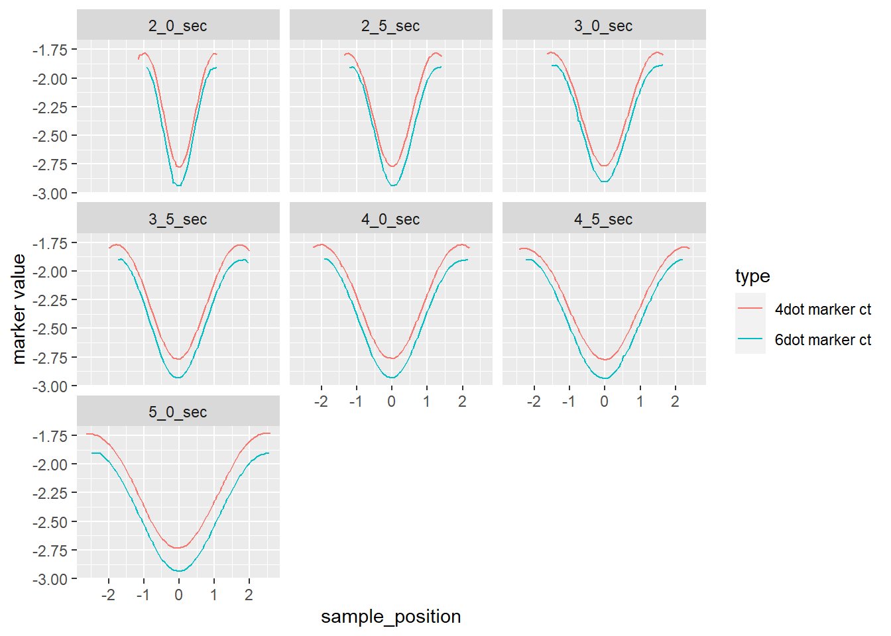
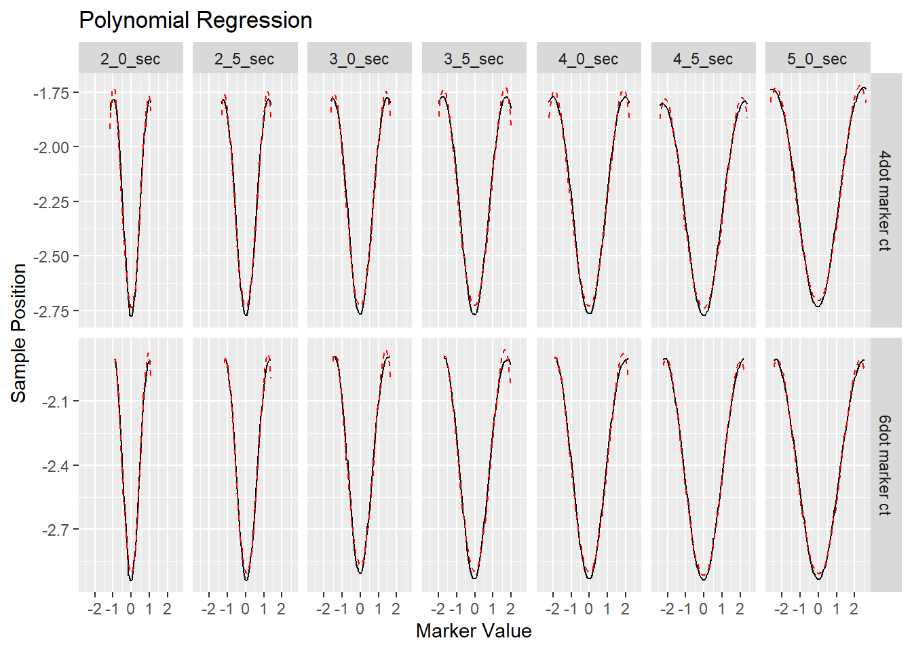

Show the code
library(readxl)
library(janitor)
library(tidyverse)library(readxl)
library(janitor)
library(tidyverse)In the context of radiotherapy CT (Computed Tomography) images, the terms “4 dot marker” and “6 dot marker” likely refer to fiducial markers or reference points that are placed on or near the patient’s body during the imaging process. These markers help in aligning and positioning the patient accurately for radiotherapy treatment planning.
4 Dot Marker:
A 4-dot marker typically consists of four small radiopaque dots arranged in a specific pattern. These markers are often placed on the patient’s skin or attached to immobilization devices during CT scans. The arrangement of the dots forms a known geometric pattern, helping in the precise localization of the region of interest.
6 Dot Marker:
Similar to the 4-dot marker, a 6-dot marker includes six radiopaque dots arranged in a specific configuration. These markers aid in the accurate mapping of the patient’s position during imaging and treatment planning. The geometric arrangement of the dots allows for better spatial referencing. Both types of markers serve as reference points for the medical team when planning and delivering radiotherapy. They help ensure that the treatment is targeted precisely at the intended area while minimizing radiation exposure to surrounding healthy tissues.
It’s worth noting that the specific design and usage of these markers may vary between different healthcare institutions and treatment protocols. The markers are an integral part of the quality assurance process in radiotherapy to enhance treatment accuracy and reproducibility.
Our data is collected at intervals of 0.5 seconds, ranging from 2.0 seconds to 5.0 seconds. The data collection is performed based on the sample points and marker values.
final_6d_ct <- read_excel("6d vs 4d CT recorded timer_SM_for stats_final.xlsx",
sheet = "FINAL_6d_CT IMAGING")
final_4d_ct <- read_excel("6d vs 4d CT recorded timer_SM_for stats_final.xlsx",
sheet = "FINAL_4d_CT IMAGING")final_4d_ct |> clean_names() |>
rename(sample_position = sample_positions) |>
pivot_longer(
names_to = "time", values_to = "marker value", x5_0_sec:x2_0_sec) |>
drop_na() |> mutate(time = str_replace_all(time, "x", ""),
type = "4dot marker ct") -> df1df1 |> ggplot(aes(sample_position, `marker value`, col=time)) +
geom_boxplot(outlier.shape = NA) +
labs(title = "4 dot Marker ct data overview")
df1 |> ggplot(aes(sample_position, `marker value`, col = time)) +
geom_line() +
labs(title = "Distribution of 4 dot Marker ct based on time point")
In every time point marker values follows the polynomial distribution for more clarity plot separately.
df1 |> ggplot(aes(sample_position, `marker value`, col = type)) +
geom_line() + facet_wrap(~time)
final_6d_ct |> clean_names() |>
select(sample_position, x2_0_sec:x5_0_sec) |>
pivot_longer(
names_to = "time", values_to = "marker value", x2_0_sec:x5_0_sec) |>
drop_na() |> mutate(time = str_replace_all(time, "x", ""),
type = "6dot marker ct") -> df2df2 |> ggplot(aes(sample_position, `marker value`, col=time)) +
geom_boxplot(outlier.shape = NA) +
labs(title = "6 dot Marker ct data overview")
df2 |> ggplot(aes(sample_position, `marker value`, col = time)) +
geom_line() +
labs(title = "Distribution of 6 dot Marker ct based on time point")
In every time point marker values follows the polynomial distribution for more clarity plot separately.
df2 |> ggplot(aes(sample_position, `marker value`, col = type)) +
geom_line() + facet_wrap(~time)
newdf <- rbind(df1, df2)
newdf |>
ggplot(aes(sample_position, `marker value`, col = type)) +
geom_line() + facet_wrap(~time)
results_df <- data.frame()
coefficients_df <- data.frame()
# Loop through all unique combinations of 'time' and 'type'
for (time_val in unique(newdf$time)) {
for (type_val in unique(newdf$type)) {
# Subset the data for the current combination
subset_data <- subset(newdf, time == time_val & type == type_val)
# Perform polynomial regression
model <- lm(`marker value` ~ poly(sample_position, degree = 4), data = subset_data)
coef_names <- c("Intercept", "x1", "x2", "x3", "x4")
coefficients_subset <- data.frame(
type = type_val,
time = time_val,
coefficients = setNames(as.list(round(coef(model),3)), coef_names) #, coef_names
)
coefficients_df <- bind_rows(coefficients_df, coefficients_subset)
# Predict values
predicted_values <- predict(model, newdata = subset_data)
# Create a data frame with results
result_subset <- data.frame(
time = time_val,
type = type_val,
sample_position = subset_data$sample_position,
marker_value = subset_data$`marker value`,
predicted = predicted_values
)
# Append the results to the main data frame
results_df <- bind_rows(results_df, result_subset)
}
}
colnames(coefficients_df) <- c("type", "time", "Intercept", "x1", "x2", "x3", "x4")
coefficients_df type time Intercept x1 x2 x3 x4
1 4dot marker ct 5_0_sec -2.185 0.059 3.877 -0.039 -1.448
2 6dot marker ct 5_0_sec -2.387 0.112 3.911 -0.145 -1.311
3 4dot marker ct 4_5_sec -2.227 0.040 3.616 -0.017 -1.430
4 6dot marker ct 4_5_sec -2.398 0.018 3.705 -0.059 -1.178
5 4dot marker ct 4_0_sec -2.194 0.023 3.509 -0.026 -1.530
6 6dot marker ct 4_0_sec -2.377 0.532 3.467 -0.574 -1.165
7 4dot marker ct 3_5_sec -2.187 0.096 3.302 -0.164 -1.528
8 6dot marker ct 3_5_sec -2.365 0.577 3.266 -0.668 -1.177
9 4dot marker ct 3_0_sec -2.205 0.083 3.023 -0.103 -1.261
10 6dot marker ct 3_0_sec -2.340 0.267 3.038 -0.330 -1.166
11 4dot marker ct 2_5_sec -2.205 0.096 2.760 -0.111 -1.192
12 6dot marker ct 2_5_sec -2.369 0.255 2.819 -0.303 -1.043
13 4dot marker ct 2_0_sec -2.200 -0.219 2.460 0.284 -1.106
14 6dot marker ct 2_0_sec -2.385 0.485 2.415 -0.503 -0.810ggplot(results_df, aes(y = marker_value, x = sample_position)) +
geom_line(col = "black") +
geom_line(aes(y = predicted), linetype = "dashed", col = "red") +
facet_grid(type ~ time, scales = "free_y") +
labs(title = "Polynomial Regression", x = "Marker Value", y = "Sample Position")
If all the coefficient sign of two model same then we conclude direction of this two model are same. only 2.0 sec 4 dot maker and 6 dot marker coefficient magnitude not same rest of that are same so this two marker time point marker values magnitude are same.